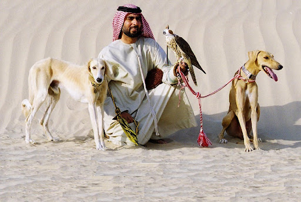

Ставлення до собак в різних релігіях світу
Зміст
- Вступ: собака як духовний та культурний образ
- Міфологія та символіка собак у стародавніх
культурах
- Єгипет та Близький Схід
- Греція та Рим
- Кельти та скандинави
- Азія
- Америка та Африка
- Християнство та церква: собаки та віра
- Іслам та юдаїзм: суворі правила та
двоїстість образу
- Іслам
- Юдаїзм
- Східні релігії: буддизм, індуїзм,
зороастризм
- Буддизм
- Індуїзм
- Зороастризм
- Символічні образи собаки
- Сучасне сприйняття та зміни у релігійній практиці
- Висновок
1. Вступ: собака як духовний та культурний образ
Собака супроводжує людину протягом тисячоліть —
як
мисливець,
сторож, захисник та супутник. На відміну від інших
свійських
тварин, її роль виходить за рамки утилітарної: собака
стає
символом, міфологічним персонажем та об'єктом релігійних
суперечок.
У різних традиціях
собака сприймається
амбівалентно: як друг і захисник, але і як істота,
пов'язана
з нечистотою. У міфах вона найчастіше виконує три
функції:
охоронця, провідника у потойбічний світ та символу
вірності.
2. Міфологія та символіка собак у стародавніх культурах
Єгипет та Близький Схід
У Єгипті шакал і собака асоціювалися з Анубісом
—
провідником
душ у потойбіччя. Його погляд символізував захист та
справедливість.
У Месопотамії собаки пов'язувалися з
богинею лікування Гулою, що робило їх символом
зцілення.
Греція та Рим
Греки створили образ Цербера, триголового пса,
який
охороняє
браму Аїда. В "Одіссеї" Аргус став уособленням вірності
господареві.
У Римі собаки зображалися на мозаїках
біля
будинків як вартові — "Cave Canem".
Кельти та скандинави
Кельтський герой Кухулін отримав ім'я
"пес Кулана" як
знак
сили та служіння.
У скандинавській міфології пес
Гармр
охороняв ворота Хель, а вовк Фенрір символізував
руйнування
в Рагнарьоці.
Азія
У Китаї собака включений у зодіак і вважається
символом
захисту. Статуї "левів-собак" біля храмів та будинків
служили оберегами.
У Японії собака асоціювалася з
родючістю та захистом дітей.
Америка та Африка
У ацтеків собака супроводжував душу померлого в
потойбіччя;
нерідко людей ховали разом із вихованцями. Особливого
значення мала порода ксолоітцкуінтлі.
В африканських
традиціях собаки вважалися посередниками між людьми та
духами.
3. Християнство та церква: собаки та віра
У Біблії собака згадується неоднозначно. Старий
Завіт
часто
пов'язує його з нечистотою, жадібністю, дурістю. Але в
Євангеліях зустрічаються образи смирення і віри через
порівняння з псами.
У Середньовіччі собака став
символом
вірності. На портретах лицарів та святих його
зображували
біля ніг. Культ Святого Роха зміцнив позитивне
сприйняття:
легенда розповідає, що пес врятував його від голоду і
допоміг зцілитися.
Православ'я стверджує: всі
творіння —
Божі, тому жорстокість до них гріх. Але зайва
прихильність
до тварин засуджується. У храм собак зазвичай не
пускають,
щоб зберегти чистоту богослужіння, хоча суворої заборони
у
Святому Письмі немає. Сучасні священики визнають:
турбота
про вихованця може виховувати милосердя.
4. Іслам та юдаїзм: суворі правила та двоїстість образу
Іслам
Собака вважається ритуально нечистим (наджас). Хадіси наказують ретельно омивати посудини, до яких він торкався. Але в Корані є й позитивна згадка: у сурі "Печера" собака охороняє праведників. Дозволяється тримати собак для охорони, полювання та пастушества. Домашнє утримання «для задоволення» довго вважалося небажаним, але сьогодні ставлення пом'якшується, і в багатьох країнах собаки — звичайні вихованці.
Юдаїзм
У Торі собака часто згадується негативно: «ціну
пса» не
можна
приносити до храму. Але є й вдячна згадка: під час
виходу з
Єгипту собаки не підняли голос проти Ізраїлевих синів.
Головний принцип юдаїзму - заборона жорстокості до
тварин
("цаар баалей хаїм"). Турбота про собаку стає
обов'язком. У рабинській традиції навіть стверджується: людина зобов'язана
годувати вихованця раніше, ніж себе.
5. Східні релігії: буддизм, індуїзм, зороастризм
Буддизм
Усі істоти включені у коло сансари. Тварини здатні страждати та накопичувати карму. Жорстокість по відношенню до собаки погіршує карму людини. У легендах собаки стають об'єктами співчуття і можуть переродитись у людському образі.
Індуїзм
Собаки пов'язані з Ямою, богом смерті: його два пси з чотирма очима охороняють душі померлих. У "Махабхараті" Юдхіштхіра відмовився увійти до раю без вірного собаки, чим довів відданість. Собаки зображуються поруч із божествами війни та полювання.
Зороастризм
Собака - священна тварина. Її погляд захищає душу померлого у ритуалі "сага-дід". Вбивство чи заподіяння шкоди собаці — тяжкий гріх. Турбота про нього вважається обов'язком. Навіть після смерті собака, за вірою зороастрійців, продовжує допомагати господареві.
6. Символічні образи собаки
У різних культурах складається кілька
універсальних
образів:
вірність - Аргус в "Одіссеї", собака Святого
Роха, китайський символ відданості;
страж - Цербер,
Гармр, собаки Ями, римські мозаїки;
провідник душ –
Анубіс, ацтекські собаки, зороастрійський ритуал;
амбівалентність - в юдаїзмі та ісламі собака одночасно
символ нечистоти та вірний охоронець.
Ці образи
відображають не тільки ставлення до тварин, але й
уявлення людини про межі між життям та смертю, добром та
злом.
7. Сучасне сприйняття та зміни у релігійній практиці
Сьогодні собаки стали частиною міського та
сімейного
життя,
що змінило й релігійні погляди.
У християнстві
з'явилися
обряди благословення тварин; пастирі підкреслюють, що
турбота про вихованців виховує милосердя.
В
ісламському
світі набирає сили гуманне ставлення до собак,
незважаючи на
традиційні заборони.
У юдаїзмі посилився акцент на
обов'язки піклуватися про тварин, собака став звичним
супутником єврейських сімей.
У буддійських країнах
монастирі відкривають притулки, де дбають про бродячих
собак.
У зороастрійській громаді (особливо у парсів в
Індії) повага до собак збереглася як елемент давньої
віри.
Сучасне суспільство все частіше сприймає собаку
як
відчуваючу істоту, що заслуговує на повагу і
турботу.
8. Висновок
Собака в релігіях і культурах завжди був поруч із людиною — на полюванні, біля порога будинку, у потойбічних міфах та в образах святих. Воін міг символізувати нечистоту і гріх або уособлювати вірність і захист. Ця двоїстість відображає внутрішні протиріччя людини: страх і довіру, шанування та відкидання. Але крізь століття собака залишався супутником, який допомагав людині розуміти межі життя та смерті, сенси дружби та відданості. У світі релігії поступово приходять до єдиної думки: турбота про тварин — частина людського милосердя. Через ставлення до собаки ми краще розуміємо самих себе та власні духовні орієнтири.